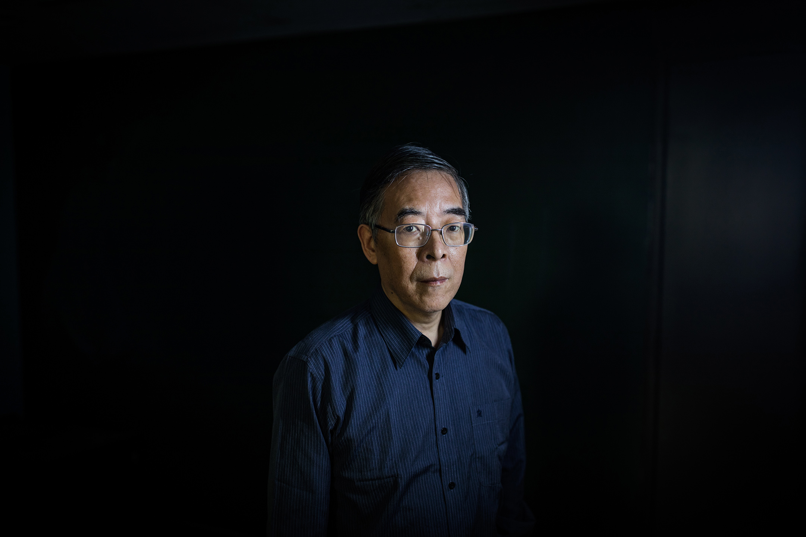
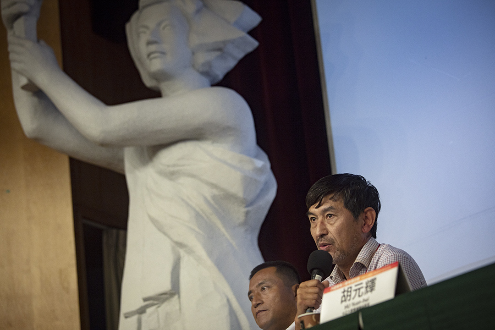
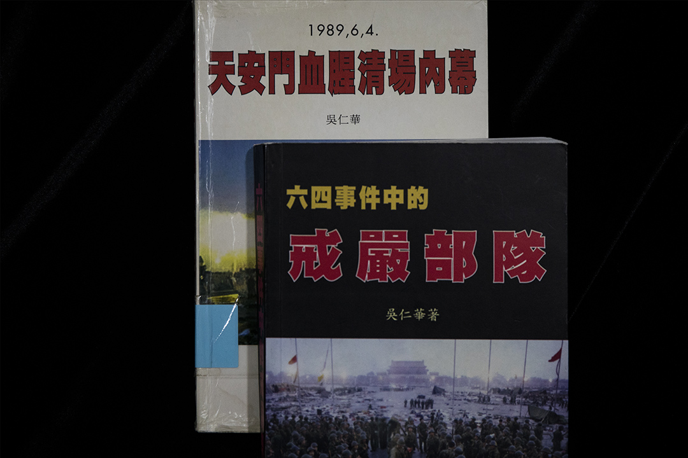
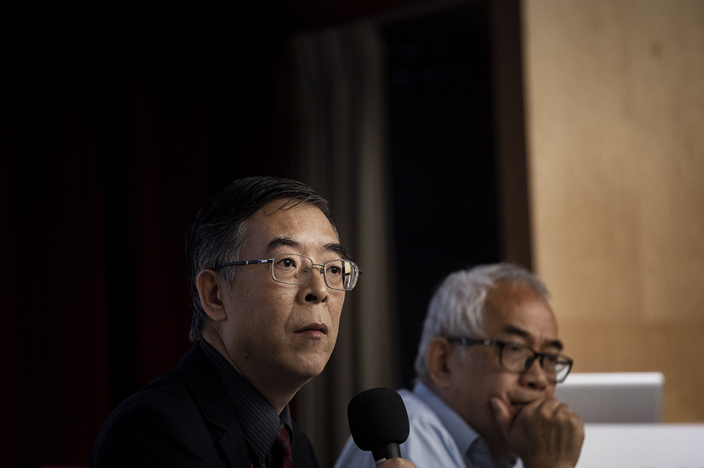
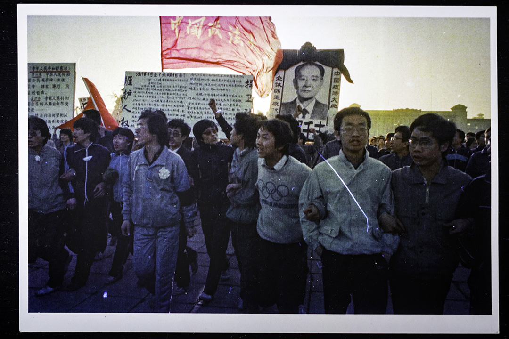
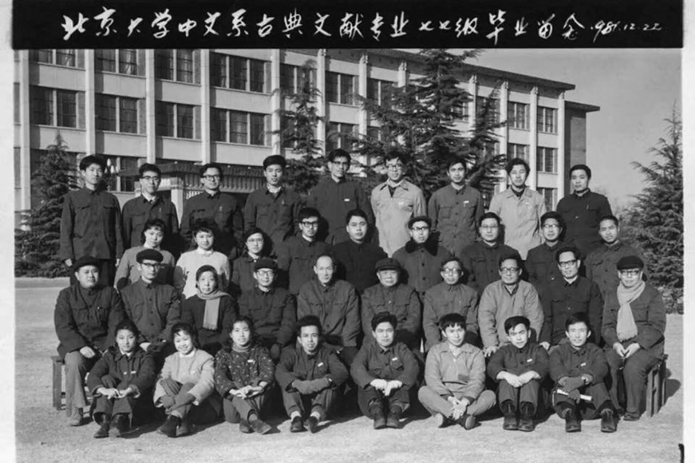
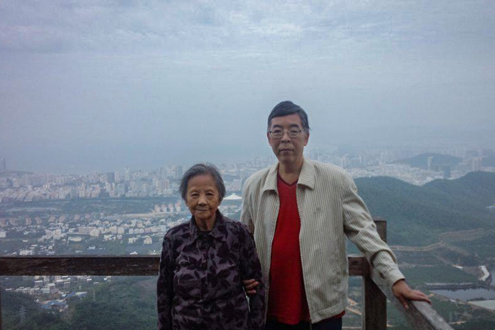
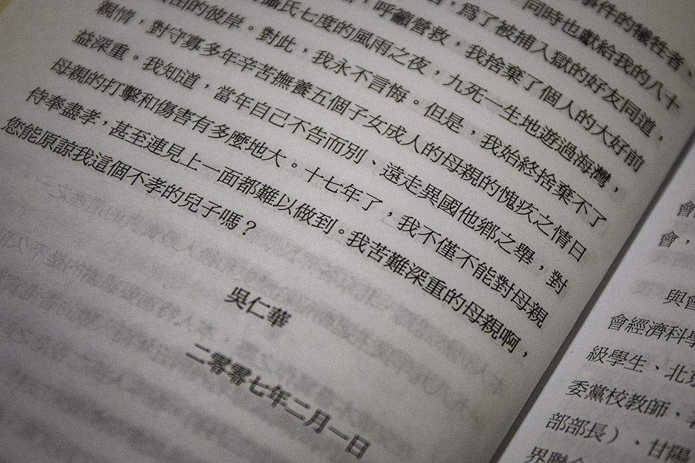
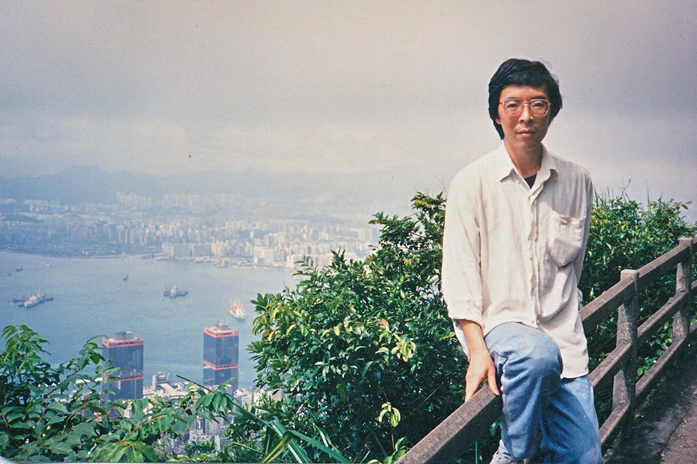

一個人的戰鬥，沒有退路的吳仁華｜端傳媒 Initium Media
Table of Contents
吳仁華三本書最初都在香港自費出版，封面是自己用 word文檔設計，「很難看、很粗糙」。「三十年過去了，你出版那些受害者名錄，誰會買呢？」

Figure 1: 吳仁華。攝：陳焯煇/端傳媒
特約撰稿人 楊平 發自台北
刊登於 2019-05-31
「我是第一次跟一個戒嚴部隊的人坐在一起。」5月18日，在台北的六四三十週年研討會上，輪椅上的六四受難者方政說。
1989年6月4日清晨，清場結束，方政是北京體育學院的學生，在撤離天安門回校的路上遭遇坦克追軋，失去雙腿，同場坦克還施放毒氣彈。彼時，吳仁 華則在稍微靠前一點的位置，差一點點，撿回了一條命。三十年後，吳仁華成為研究六四真相的重要人物。當年戒嚴部隊中的一員李曉明，是迄今少有公開經歷的軍 人，他坐到方政身邊，這兩人分別屬於加害者及受害者陣營，同以研究對象身份獲邀，擔任吳的論文評論人。
這個由支聯會和華人民主書院舉辦的學術研討會，吳仁華是首場發表人，他一身黑色西裝，表情肅穆，準備了整整13頁長的論文，在不到一小時的時間裡， 以極快的語速連珠炮似地念出包圍天安門廣場的戒嚴部隊番號，當中包括輾過方政雙腳的坦克編號為106，乃隸屬於天津警備區坦克第1師，團長為上校羅剛。
方政希望吳仁華能再找出輾軋的命令是由誰下達，如何下達，為何要下達。「我最想知道，已經完成了鎮壓命令，學生都已經撤出了，為什麼還要追殺我們呢？」

Figure 2: 方政(左)及李曉明(右)出席「六四事件30周年中國民主運動的價值更新與路徑探索研討會」。
但實際上，六四研究已超出吳仁華的負荷，這份落落長的論文，幾乎是他自2011年後首次完整書寫的研究文章。他本還打算趁六四三十週年之際，將手上已有的700多位受害者名單在Twitter上公開發佈。但終沒按期公佈，「我非常自責，也非常遺憾」。
1989年，吳仁華33歲，是中國政法大學的青年教師，從第一天到最後一刻，全程親歷了八九民運。翌年流亡美國後，他一直搜集和面對血腥的屠殺資 料，常常夜不能寐。2009年起，他發現自己和人交流談話沒有問題，但一打開電腦文檔要寫六四的研究，就做不下去。「就是心情非常痛苦，腦中一片空白。」
然而關於六四真相的研究，迄今仍是吳仁華生活的最大主題。
一、揭開真相的苦行僧
今年4月中旬開始，吳仁華的Twitter上就不再有別的內容，全是六四、六四、六四。2011年4月15日到6月9日，他已在這個帳戶上逐日回顧八九天安門事件，即為其第三本著作《六四事件全程實錄》的雛型，此後每年這個時間，都逐日轉發。
1989年，他在中國政法大學擔任法律古籍整理研究所的研究員。此前，他是中國文革結束後首屆恢復高考就考上北大中文系古典文獻專業的高材生，有碩士學位。他沒有料到的是，這些考據學、版本學的訓練，日後最大的用處，竟是搜集、比對和追蹤六四事件中戒嚴部隊的資料。
從1990年流亡美國至今，他出版三本專著，被視為中國六四真相研究的重要人物。首本《六四天安門血腥清場內幕》，巨細靡遺地記錄了6月3日至6月 4日在天安門廣場發生的事。第二本《六四事件中的戒嚴部隊》，則破解了19支戒嚴部隊的番號，在6月3日進駐北京城的每一條路線，並附上3000多名參與 鎮壓的軍人名單。

Figure 3: 吳仁華的《六四天安門血腥清場內幕》和《六四事件中的戒嚴部隊》。
這是花費吳仁華最多心力，也是資料搜集難度最大的研究。他先閱讀大量中國官方在六四之後美化、嘉獎戒嚴部隊的宣傳資料，包括光明日報出版社在 1989年9月出版的《新時期最可愛的人-–—北京戒嚴部隊英雄錄》，解放軍出版社同年10月出版的《共和國衛士之歌-–—首都戒嚴部隊英模事跡報告文學 集》，以及北京市公安局政治部編寫的《首都公安幹警平暴紀實》等等。
比對這些官方資料，他設定40個以上的關鍵詞，例如「中槍」、「受傷」、「倒地」，在網上日復日地搜尋戒嚴部隊的聊天記錄，從隻言片語去追蹤，再用版本學的方法比對不同人在同一時段、同一地點的描述，確認真偽，最後才能像拼圖一樣地把每一支戒嚴部隊的進軍路線拼出來。
整理出加害者和受害者的名單，對他來說，是「對個體的尊重」，也是「對歷史的尊重」。他說：「像六四屠殺這麼一個人權的災難性事件，沒有這兩方面的記錄，（研究）是不夠格的。」
這樣特殊的研究方法，令他經常通宵達旦地守在電腦前，「有時候你好不容易在網絡上跟蹤到戒嚴部隊在聊天，要是離開電腦，你可能就再也見不到他們的聊 天記錄了。 」正因如此，他有時連續二十幾個小時，乃至三十幾個小時盯著電腦，長期沒有正常的節假日，生活清簡，自己簡單煮個麵就是一餐，像個苦行僧。
然而這樣的心血，隨著六四事件一年年的過去，已經越來越少被公眾看到。在美國洛杉磯生活，他過去以擔任《自由新聞導報》總編，來應付日常生活的開 支。三本書最初都在香港自費出版，封面下方寫著其實不存在、由他創辦的「真相出版社」，連封面都是自己用 word 文檔設計，「很難看、很粗糙」。直至近年，終於有台灣出版社找他再版。
吳仁華為六四研究的前景擔憂。「三十年過去了，你出版那些受害者名錄，誰會買呢？」他說。無人買的書，自然不受出版社青睞，若無其他收入，研究者幾 乎不可能全職投入其中。但為了讓更多人接觸到他的研究，他早已不計成本地將大部分研究成果在Twitter上公布了。誰還在期待六四研究？這樣的苦戰，是 在為誰而戰？

Figure 4: 2019年5月19日，吳仁華參加華人民主書院與支聯會舉行「六四事件30周年中國民主運動的價值更新與路徑探索研討會」。
在台北的研討會上，被坦克壓斷雙腿的方政對吳仁華說，他還在期待。「作為受害者，我認為吳老師的工作很珍貴。」他希望吳仁華可以繼續研究下去，「把這些軍隊的罪責確定下來」。
「我希望有朝一日可以到法庭上，找到那個開坦克的戒嚴軍人，跟他對質。」方政說。
找出答案很艱難，但吳仁華無法放棄。研究屠殺逼迫他長年面對血淋淋的資料，又是親身經歷，他形容，時時刻刻讓他感到悲傷、痛苦、憤怒。「所以早期我寫第一本書的時候，經常深更半夜寫著寫著，就自己趴在鍵盤上失聲痛哭。」他說，「因為那些都是屠殺的場面啊。」
整理出加害者和受害者的名單，對他來說，是「對個體的尊重」，也是「對歷史的尊重」。他說：「像六四屠殺這麼一個人權的災難性事件，沒有這兩方面的記錄，（研究）是不夠格的。」揭開真相的人，無可避免地劃破自己的手，可又必須去揭。他告訴自己必須做下去。

Figure 5: 1989年4月22日，吳仁華(前排右起第五)在北京天安門廣場時，被當時的香港記者司徒元拍下的一張照片。
二、賭上一生的知識分子
吳仁華的家庭經歷過不止一次的政治運動，父親曾被下放到偏遠的南麂島，他自己也曾在70年代下鄉插隊。好不容易捱到回城，參加了文革後的首屆高考， 一舉考上北大，特地報一個讀古書的專業。「具體做什麼不知道，就是想遠離政治，躲進古書堆裡，一心只讀聖賢書，兩耳不聞窗外事。」他說。
他出生在中國浙江省溫州市平陽縣，一個東海畔的小漁村。考上大學時，他第一次登上由溫州開往北京的長途火車，足足搭了30多個小時，沒有座位。從1978年進入北大到八九民運爆發前，他一直實踐當初的想法，一心一意做個專心學術的知識分子。
出發之前，弟弟從溫州來電，問他北京情況怎麼樣，有沒有參加？他回答：「我沒事，我還是在學校讀書做研究呢。」
但身處北京，知識分子間的友誼建立得很快。吳仁華北大畢業後，去了中國政法大學當青年教師，同事陳小平和曾參加四五天安門運動的王軍濤關係不錯，常一起過週末，吳仁華也同往。但一談到政治，他就主動避開，連讀書會也不參加。
直到胡耀邦在1989年去世，他回想過往幾十年整個學界在政治上的壓抑，深感青年知識分子不可再犯「軟骨症」，於是才抱著十年寒窗付之東流的決心，賭上一生，捲入運動。

Figure 6: 吳仁華的大學畢業照。
當年4月17日，他和陳小平一同帶領八九民運第一次有組織的遊行，送花圈到天安門廣場祭奠胡耀邦。4天後，北京各高校第一次聯合遊行，他又說服同事劉蘇里拿出原本要打家具的上好圓木，請木匠加班加點做了兩塊大看板。一個月後，他決定與學生共進退，開始絕食。
更兇險的時刻很快就來臨了。6月3日上午，軍隊在新華門附近的六部口發射催淚瓦斯，動用警棍和木棍來驅散民眾和學生，吳仁華感覺鎮壓隨時會發生。
天安門廣場熄燈，到再開燈，他形容，那是最恐怖的時刻。「在場所有人都覺得，最後的時刻到了。」
那天下午，他帶領一支40人的特別糾察隊前往天安門廣場保護絕食「四君子」劉曉波、侯德健、高新、周舵的安全。出發之前，弟弟從溫州來電，問他北京 情況怎麼樣，有沒有參加？他回答：「我沒事，我還是在學校讀書做研究呢。」他當然沒有告訴弟弟真實的情況，「我就是讓他告訴母親，讓她放心。」那是整場運 動中，他唯一接到來自家裡的電話。放下話筒，他就出發去廣場。
至6月4日凌晨4點，天安門廣場熄燈，到4點半開燈，吳仁華形容，那是最恐怖的時刻。「在場所有人都覺得，最後的時刻到了。」留下來的幾千人都抱著 死志，吳仁華在人民英雄紀念碑的最高層台階上，身後就是劉曉波絕食的帳篷，他一直和同事劉蘇里在一起，「我要盯著他，我要讓他在我的視線裡」。
因為劉蘇里的妻子把不到兩歲的孩子一個人放在家，跑到廣場找丈夫，請他為了孩子，一定要保重。她還哭著拜託吳仁華，「你一定要關照好劉蘇里。我就跟她說只要我在，我就會關照好」。
許多民眾身上帶著血奔到廣場，給他們報信。他知道屠殺正在逼近。廣場四周佈滿了全副武裝的戒嚴部隊，頭戴鋼盔，手持槍支，還有許多裝甲車。廣場上空不斷有發射子彈劃出的彈道，「像節日放禮花一樣」。
在這種時刻，吳仁華竟然遇到一位溫州老鄉，是一位脖子上掛著相機的姑娘。「這是歷史的最後一刻，我應該把這最後一刻用相機記錄下來。」她說，又要給 他照張相。吳仁華想到母親，覺得這可能是自己人生的最後一張照片了，請她照完一定要寄回溫州老家。他給這個素不相識的老鄉寫下老家的地址：溫州市蒼南縣龍 港鎮金釵街34號，還寫了母親的名字。對方一口答應。
但直到現在，吳仁華都沒有收到這張照片，擔心她很有可能已遇難。多年研究六四，讓他非常清楚，照相的人在當晚特別危險。天津師大中文系本科生李浩成、中國人民大學新聞系學生陳來順，還有天安門母親張先玲的孩子、當年還是高中生的王楠，都是在照相的時候被殺的。
他分析原因有二，一是中國官方不想讓人留下屠殺記錄，二是當年攝影技術未夠發達，相機須使用閃光燈。他在上大學前曾當過溫州的公安邊防兵，知道要開槍，有光的地方就是靶子。「有時候點根煙，煙頭的火就是靶子，更不用說閃光燈，很容易被擊中。」
血腥清場結束，他在溫州朋友父母的家裡住了三個多月，輾轉來回北京幾次，終決定逃亡。這一次，他又登上了連接北京與溫州的長途火車。十幾年前那個少年北上要做家中第一個高級知識分子；十幾年後，他帶著整場八九六四的親歷記憶，走同一條鐵路，卻是走向流亡。
1990年，他如常回家，和家人過完年，不告而別。先從珠海偷渡到澳門，他喝下蛇頭給的一大瓶人參蜂王漿，吊住精神，在寒夜裡用4個小時游過海灣，再經由「黃雀行動」輾轉到香港、美國。再回家，已是22年後。

Figure 7: 吳仁華與他的母親。
三、沒有退路的「不孝子」
「立此存照：盡速完成六四寫作計劃，不計代價，以自己選擇的方式回中國，給父親上墳，給母親叩安。」2011年1月19日，吳仁華在Twitter上這樣寫道。
那一年，他的母親85歲了。母親很早就做了寡婦，孤身養大五個孩子，吳仁華從小農村考上北大，又做了大學老師，是其中最有出息的。他走後，母親、哥 哥、弟弟都受牽連。中國官方從浙江省級的，到溫州市級的，再到蒼南縣級的，至今仍然年年找他母親談話。弟弟本來是全省十大優秀畢業生，省委組織部選定的後 備幹部，享處級幹部待遇，但1989年以後，公務員資格被取消，降為普通職工，前途止步。家人間從不談論這件事，但吳仁華十分不忿，覺得是國家對不起弟 弟。
母子兩人都性格剛強，定期通電話，不說想念，母親也不曾喊他快回來。「因為我們都知道，這是現實政治不允許我們母子團聚，所以說這個話不能解決問題，只能增加對方的傷感。」
對於吳仁華當年做了什麼，這些年又在海外做些什麼，母親一句也不問。
2011年，同是吳仁華發現自己因持續研究六四而精神受創的年份，他無法再像過去那樣全身心地撲在研究上，像機械一樣無休地勞作；身心都在告訴他，該回家了。
他秘密辦理過去多年一直不願拿的美國護照，洛杉磯最大的中文報紙《世界日報》有許多代辦中國簽證的小廣告，只要多付錢，就可以幫忙免去一些麻煩，例 如可以不用向官方提供本來的中文名。1200美金，他買到了45天的中國簽證，終在2012年底靜悄悄入境回去溫州。至平安回到洛杉磯，他才敢在網上說， 回家的感覺，是「汗下如雨」，是「吸煙定神，頭暈欲倒」，是「像做夢一樣，不敢想象」。
45天裡，他有一天去祭拜當年藏了他三個多月的老夫婦。「他們那時冒著風險，寧可跟著坐牢，也不讓我離開他們家，還抱著我的東西不讓我走。我覺得人要感恩。」其餘的44天，他每天都陪母親散步兩次，二人還去了一趟海南旅行。
對於吳仁華當年做了什麼，這些年又在海外做些什麼，母親一句也不問。他起初以為母親是不知道，直到有一天母親不在家，他進到母親的房間，在枕邊發現了自己寫的兩本書。他大為震驚。
第一本《六四天安門血腥清場內幕》，已經被翻得非常爛，書角都已經捲起，「我沒見過哪本書可以損傷成那樣的」。第二本寫戒嚴部隊的書卻完好如初。
「我就想，我母親在很多個不眠之夜，可能就是翻那本書。那她為什麼翻第一本，不翻第二本呢？我猜是因為第一本書的作者前言裡，我寫了一段是給我母親的。我說忠孝不能兩全，我是個不孝子，下輩子，如果有來生，我一定做個孝子，我其他都不做，就要侍奉我母親。」

Figure 8: 吳仁華的《六四天安門血腥清場內幕》前言中，關於母親的一段話。.
他突然明白母親對他做的事一清二楚，只是不願意問。「因為她要是問了，就很為難。你說問吧，因為做這些事寫這些書不能回家，給她增加這麼大的壓力， 她是勸我好呢，還是不勸好呢？要不要按照中國官方的要求來勸我放棄呢？所以她裝作不知道。」回家前，他本來想好在母親和妹妹面前絕不掉眼淚，但那天心中感 觸太深，還是掉了淚。
「現在逼得在這種精神狀態、身體狀態下，還要繼續把剩下的計劃完成，我真的有很大的壓力。」
後來，中國官方告訴他，以後再無入境可能。要想再回去，就要寫悔過書、保證書，在某程度上跟中國官方合作，出賣一些自己的同道。這是唯一的路。「但是作為一個知識分子，一個歷史記錄者，不能走這條路啊。」吳仁華說，「因為有更重要的東西需要你考慮啊。」
這個更重要的東西，就是歷史記錄、六四研究。三十年很快就過去，許多親歷者、目擊者、知情者都可能已經不在了。「這是一個搶救性的工作。」六四歷史記錄如果欠缺，對他來講是「無法忍受的」。
但資料獲得的困難，資源的限制，讓他越來越感覺六四真相研究仿佛是他一個人的戰鬥。他已經63歲，如果在學術機構，恐怕早已經到了退休年紀，可是六 四研究領域的現狀，卻讓他沒有退路，別無選擇。「現在逼得在這種精神狀態、身體狀態下，還要繼續把剩下的計劃完成，我真的有很大的壓力。」
「資料欠缺，又是禁區。港台的研究機構也開始有學術的自我審查，跟中國大陸有很多學術交流。一些台灣的大學怕陸生減少，也不敢碰這些問題」。沒有團隊，沒有資金，他只能獨立地做研究。
「這真是一個悲哀，也是一個遺憾。」吳仁華長歎一口氣。

Figure 9: 吳仁華來香港後的照片。
四、家在海那邊
去年4月，吳仁華受台灣民主基金會和東吳大學邀請，到台灣擔任訪問學人。這一年時間，是他流亡後，休養得最多、最好的一段時間。
他需要回家調適心理，卻無法歸去，選擇台灣，是因為覺得像溫州。「台灣隔著海峽，對岸就是溫州。」他所出生的溫州市平陽縣有座南麂島，是台灣不少大陳眷村居民的故鄉。少年時，他在溫州家中打開短波收音機，總是因為太近，而不小心收到台灣的波段。
他看到故鄉的影子，包括多雨的氣候、好食海鮮和甜食的飲食文化，還有雖不會說，但卻聽得懂的閩南話（台語）。溫州是浙江省最南端的市，接壤福建，許 多人既講溫州話，也通閩南語。他還在台北公館一帶的溫州街和泰順街找到了兒時吃過的早餐「燈盞糕」，裡面裹著白蘿蔔絲，外皮炸至金黃，多角的形狀。
「我希望在台灣做一個好的休養，可以讓我盡快調整好，就可以盡快把想做的研究計畫做完。」吳仁華不想一直把自己困在六四的城堡裡。「我也是嚮往自己 的生活的，但這個課題佔用了我太多的時間。」他說本性貪玩，是圍棋和德州撲克好手，並不願意每天都苦大仇深的。「人家問我最想做什麼，我很少這樣回答媒 體，其實我就是想按照自己的愛好，去過自己的生活。我希望回歸真正的我。」
吳仁華宣告，給自己設定生涯最後一個六四研究計劃。翻查官方資料，他發現截至1989年6月25日，全中國就已經有11013人因為六四事件而被捕，還不包括陝西和西藏的數據。這些人叫什麼名字，因何被捕，如今在哪裡，此後的際遇如何？
吳仁華希望，將那未完成的受害者名單盡可能做到最全，在被捕之外，像方政那樣受傷、被取消學籍，或是像吳仁華的弟弟那樣受牽連影響的人，還有更多。 他計劃整理手上已有的700多人名單放上Twitter，引出有類似經歷的網友，一同從民間找尋資料，完成第四本書的寫作。吳仁華的六四真相研究，還在繼 續。
本刊載內容版權為端傳媒或相關單位所有，未經端傳媒編輯部授權，請勿轉載或複製，否則即為侵權。